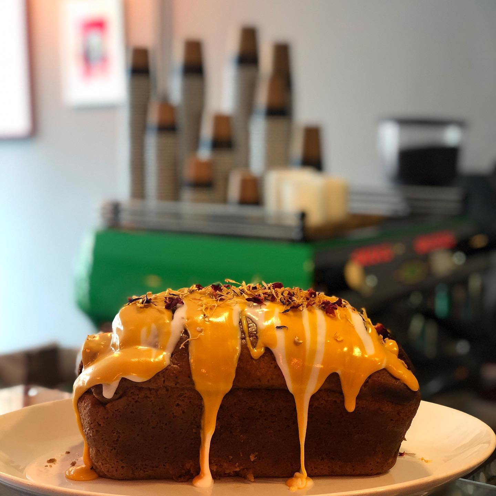
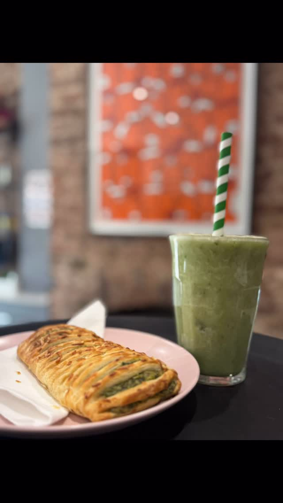
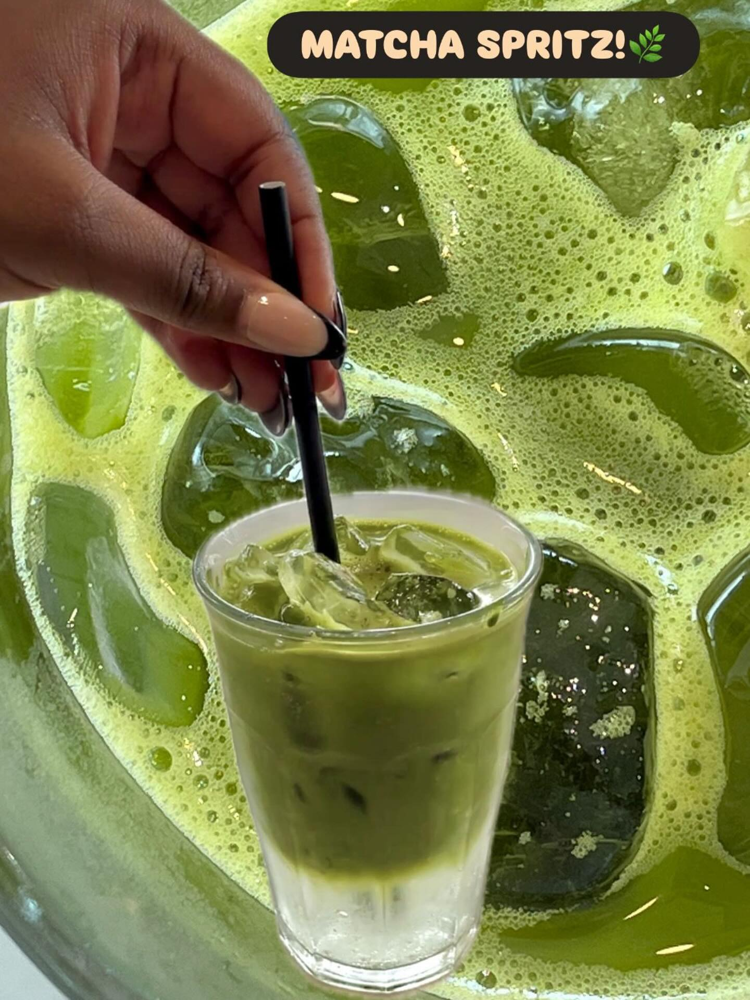
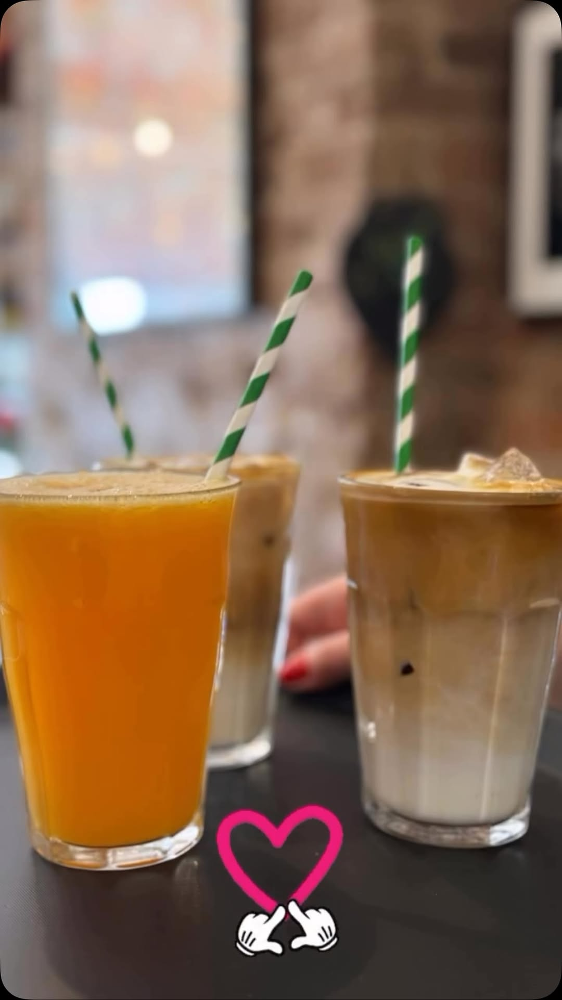

Allpress & Good & Proper
Flat whites, iced lattes, fresh juice, and vibrant matcha whisked to order.
Neighbourhood coffee, homemade cakes, and a garden patio opposite Crofton Park station.
Crofton Park · SE4
Fred's is a family-friendly cafe serving Allpress coffee, Good & Proper matcha, fresh cakes and in-house bakes — from warm sausage rolls to vegan lemon poppy seed cake. Grab-and-go for the train, or settle into the garden with free Wi‑Fi.

Flat whites, iced lattes, fresh juice, and vibrant matcha whisked to order.

Come and grab a warm one — flaky pastry, the regulars' favourite grab-and-go.

Homemade cakes, vegan lemon poppy, pasteis de nata, muffins and more — freshly made.
@fredslondon
More from the shop




Find us
Right opposite Crofton Park station — perfect for a grab-and-go coffee or a slow garden sit.
| Monday – Friday | 8:00 – 16:00 |
| Saturday – Sunday | 8:30 – 16:00 |